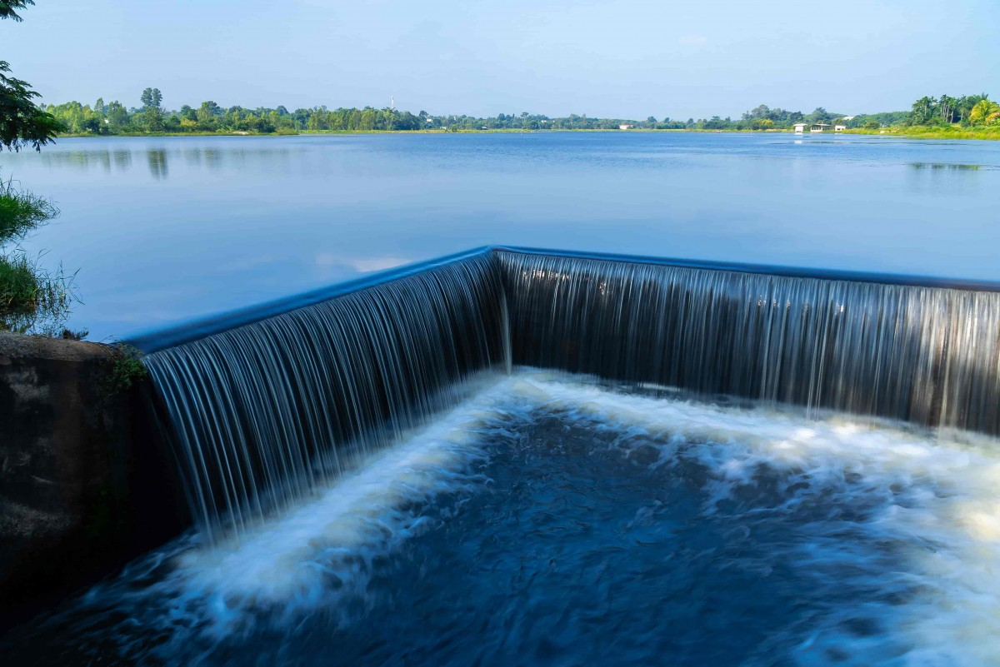

ECOLE SUPERIEURE DE MINES ET GEOLOGIE
L'Ecole Supérieure de Mines et de Géologie (ESMG) est le résultat de la synergie d'action des professionnels des domaines des mines de la géologie et du pétrole, associés au corps enseignant de l'INP-HB et des universités de Côte d'Ivoire. Depuis 2015, l'ESMG est un centre d'excellence régional de la Banque Mondiale pour les Mines et l'environnement minier. Elle bénéficie pour ce faire d'un appui constant des entreprises minières nationales et des partenaires au développement internationaux. La formation à l'ESMG est menée selon une approche pédagogique innovante qui met à contribution nos partenaires locaux et internationaux. L'École développe avec des Grandes Écoles qui évoluent dans le même secteur des activités conjointes, couplées avec des visites de chantiers et de plateformes pétrolières. Vous rêvez d'une formation supérieure dans le domaine des mines et du pétrole ? Donnez-vous les moyens d'intégrer une école d'élite. L'ESMG vous ouvre ses portes, montrez-nous vos capacités, laissez- nous les étendre.
Ingénieur en Mines et Carrières : Au cœur de l'industrie extractive responsable
L'ingénieur en Mines et Carrières est un professionnel essentiel dans le secteur de l'industrie extractive.
Ce métier allie expertise technique, gestion des ressources naturelles et responsabilité environnementale.
Les ingénieurs en Mines et Carrières jouent un rôle crucial dans l'exploration, l'exploitation et la gestion durable
des ressources minérales nécessaires à notre développement. Dans cet article, nous explorerons le rôle de l'ingénieur
en Mines et Carrières, ses compétences et son impact sur l'industrie et l'environnement.
L'ingénieur en Mines et Carrières est un professionnel essentiel dans le secteur de l'industrie extractive. Ce métier allie expertise technique, gestion des ressources naturelles et responsabilité environnementale. Les ingénieurs en Mines et Carrières jouent un rôle crucial dans l'exploration, l'exploitation et la gestion durable des ressources minérales nécessaires à notre développement. Dans cet article, nous explorerons le rôle de l'ingénieur en Mines et Carrières, ses compétences et son impact sur l'industrie et l'environnement.
Les compétences de l'ingénieur en Mines et Carrières :
L'ingénieur en Mines et Carrières possède une solide formation technique et scientifique, axée sur les domaines de la géologie, de l'exploitation minière, de la gestion des ressources et de l'environnement. Ces compétences lui permettent de comprendre les caractéristiques géologiques des gisements minéraux, d'évaluer leur potentiel économique et de concevoir des méthodes d'extraction efficaces et sécuritaires. De plus, l'ingénieur en Mines et Carrières développe des compétences en gestion de projet, en réglementation environnementale et en gestion des risques.
Le rôle de l'ingénieur en Mines et Carrières :
L'ingénieur en Mines et Carrières est responsable de l'ensemble du cycle de vie des mines et des carrières, depuis l'exploration et l'évaluation des gisements jusqu'à la réhabilitation des sites après leur exploitation. Il travaille en collaboration avec des équipes multidisciplinaires pour concevoir et superviser les opérations minières, veiller à la sécurité des travailleurs, gérer les impacts environnementaux et assurer la rentabilité des projets. L'ingénieur en Mines et Carrières doit également tenir compte des aspects sociaux et communautaires, en favorisant la consultation des parties prenantes et en s'assurant du respect des normes éthiques et légales.
Les domaines d'intervention de l'ingénieur en Mines et Carrières :
L'ingénieur en Mines et Carrières peut intervenir dans divers domaines liés à l'industrie extractive. Il peut participer à des projets d'exploration pour identifier de nouveaux gisements minéraux, évaluer leur viabilité économique et estimer leurs réserves. Pendant la phase d'exploitation, l'ingénieur en Mines et Carrières supervise les opérations d'extraction, met en place des systèmes de contrôle et de sécurité, et gère les aspects environnementaux tels que la gestion des déchets et la réduction des impacts sur les écosystèmes. Enfin, après l'exploitation, l'ingénieur en Mines et Carrières se charge de la réhabilitation des sites pour minimiser les effets à long terme et favoriser la restauration des écosystèmes.
L'impact de l'ingénieur en Mines et Carrières :
L'ingénieur en Mines et Carrières joue un rôle clé dans la gestion responsable des ressources minérales. Grâce à ses compétences techniques et à sa connaissance

Ingénieur de traitement des eaux : Protéger notre ressource vitale

Dans un monde confronté à des défis croissants en matière de gestion des ressources en eau, le rôle des ingénieurs de traitement des eaux est devenu crucial. Ces professionnels dévoués s'emploient à protéger et à préserver cette ressource vitale en mettant en œuvre des solutions innovantes pour le traitement et la purification de l'eau. Dans cet article, nous explorerons le métier d'ingénieur de traitement des eaux, en mettant en lumière les compétences nécessaires, les responsabilités et l'importance de leur travail.
Compétences techniques et spécialisées :
Les ingénieurs de traitement des eaux doivent posséder une solide formation technique dans les domaines de la chimie, de la biologie et de l'ingénierie. Ils doivent comprendre les processus de purification de l'eau, les différentes technologies de traitement et les réglementations en vigueur. Leur expertise leur permet de concevoir, de développer et de mettre en place des systèmes de traitement des eaux adaptés aux besoins spécifiques des régions ou des industries qu'ils servent.
Responsabilités et tâches quotidiennes :
Le travail d'un ingénieur de traitement des eaux peut varier en fonction de l'endroit où il exerce et des projets auxquels il participe. Cependant, certaines responsabilités sont courantes. Ils sont chargés de surveiller la qualité de l'eau brute, d'analyser les échantillons pour identifier les contaminants et de concevoir des plans de traitement appropriés. Ils veillent à l'efficacité des installations de traitement existantes et mettent en place des systèmes de contrôle pour maintenir les normes de qualité de l'eau. De plus, ils travaillent en étroite collaboration avec d'autres professionnels, tels que les techniciens de laboratoire, les opérateurs de traitement des eaux et les responsables de la conformité réglementaire.
Innovation et développement durable :
La durabilité est un aspect essentiel du travail des ingénieurs de traitement des eaux. Ils sont constamment à la recherche de nouvelles technologies et de pratiques innovantes pour améliorer l'efficacité des processus de traitement tout en minimisant l'impact sur l'environnement. Cela peut inclure l'utilisation de techniques de filtration avancées, l'adoption de méthodes de traitement moins énergivores ou le recours à des sources d'énergie renouvelable. Leur objectif ultime est de trouver des solutions durables pour garantir l'accès à une eau propre et sûre pour les populations et les industries.
Importance pour la santé publique et l'environnement :
Le travail des ingénieurs de traitement des eaux revêt une importance capitale pour la santé publique et la préservation de l'environnement. En assurant la qualité de l'eau potable et en traitant les eaux usées, ils contribuent à prévenir la propagation de maladies d'origine hydrique et à protéger les écosystèmes aquatiques. Leur expertise permet de réduire les impacts néfastes de la pollution sur les rivières, les lacs et les océans, préservant ainsi la biodiversité et les ressources naturelles.
Conclusion :
Les ingénieurs de traitement des eaux jouent un rôle essentiel dans la préservation de notre ressource vitale, l'eau. Leur expertise technique et leur dévouement à l'innovation contribuent à garantir l'accès à une eau propre et sûre, tout en préservant la santé publique et l'environnement. Grâce à leur travail, nous pouvons bénéficier d'une eau de qualité pour nos besoins quotidiens et assurer un avenir durable pour les générations à venir.